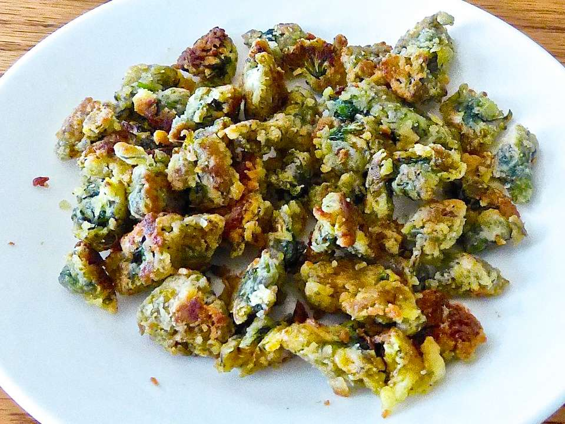

Fried Dandelions (Appalachian Style)

Description
This recipe is a local favorite back in West Virginia, up in the Appalachian Mountains.
This recipe consists of picking the largest dandelion flowers and leaving the entire stem behind, battering the flowers up and frying them in butter. Has a flavor similar to that of mushrooms. One word of caution...to avoid a bitter taste, make sure the dandelion flowers you're picking have not been sprayed by dogs or pesticides.
Ingredients
- 2 cups all-purpose flour
- 2 tablespoons seasoned salt
- 1 tablespoon ground black pepper
- 4 eggs
- 80 unopened dandelion blossoms, stems removed
- ½ cup butter
Steps
- Prepare the dandelion flowers ahead of time by submerging them in a bowl of room-temperature water with about 1 tablespoon of salt added to the water. This rids the flowers of any insects that could be in the blossoms. Soak for about 10 minutes. Rinse the flowers in fresh water. Using a salad spinner works nicely to rinse and dry the dandelion flowers.
- Combine the flour, seasoned salt, and pepper in a mixing bowl until evenly combined; set aside. Beat the eggs in a mixing bowl, then stir in the dandelion blossoms until completely coated.
- Melt the butter in a large skillet over medium heat. Remove half of the dandelions from the egg, and allow the excess egg to drip away. Toss in the flour until completely coated, then remove from the flour, tossing between your hands to allow excess flour to fall away. Cook the dandelions in the melted butter until golden brown, stirring occasionally, about 5 minutes. Drain on a paper towel-lined plate. Repeat with the remaining dandelions.
Return to Recipes